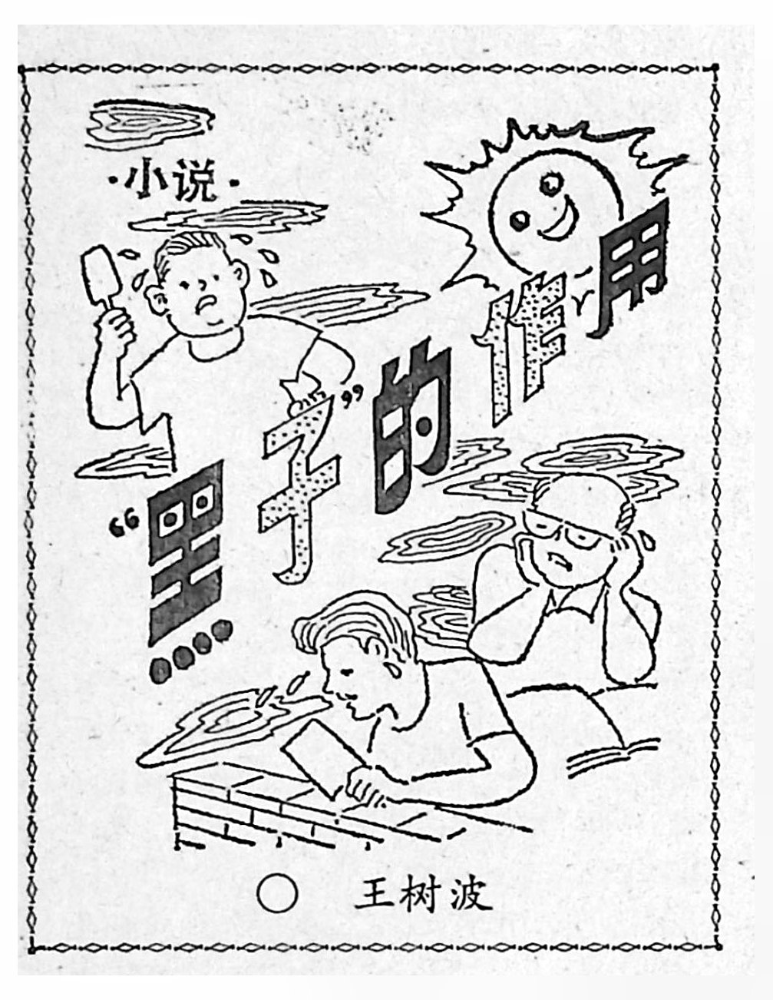

佚名 《人事》1988年第9期（总第36期），第48页
“黑子”的作用（题图）
The Effect of “Sunspots” (title drawing)
- Text in the drawing
- 小说 / “黑子”的作用
Short story / The Effect of “Sunspots” - Passage illustrated
某局C处的三个老干事自看了这条消息后，心里都掠过了一阵窃喜而不是焦虑：这下子休息可不用到医院开假条了。更何况处长出差不在家呢。
When the three veteran clerks of Division C in a certain bureau read this news item, what passed through their minds was not anxiety but secret delight: now they could take time off without going to the hospital for a sick note. Besides, the division chief was away on a business trip.From the short story “黑子”的作用 (“The Effect of ‘Sunspots’”) by Wang Shubo, on the same page. 王树波《“黑子”的作用》（小说），同页
- Description
- Title drawing for the story: a grinning sun beams down on three office workers, one clutching his head, one in glasses rubbing his temples, one slumped over his desk.
- Note
- In the story three veteran clerks read a newspaper report that solar flares cause headaches and use it as an excuse to stay away from the office; when the bureau chief visits their homes, he finds one building an extension and another helping sell ice lollies — and the next promotion goes to the young clerk who stayed at his desk.
- Artist
- Unattributed 佚名
- Published in
- 《人事》1988年第9期（总第36期）, p. 48
- Themes
- Bureaucratism · Story illustrations

Cite
Unattributed, ““黑子”的作用（题图）” [The Effect of “Sunspots” (title drawing)], Renshi (Personnel) 《人事》, 1988, no. 9, p. 48.